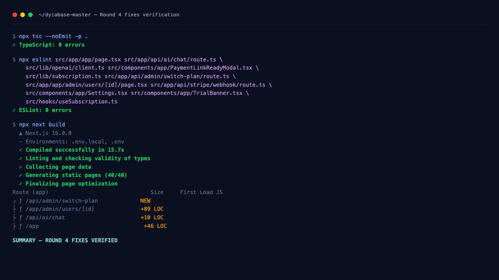
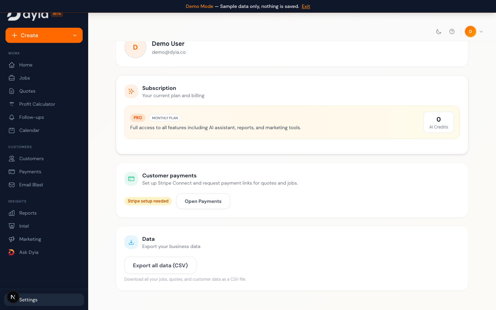
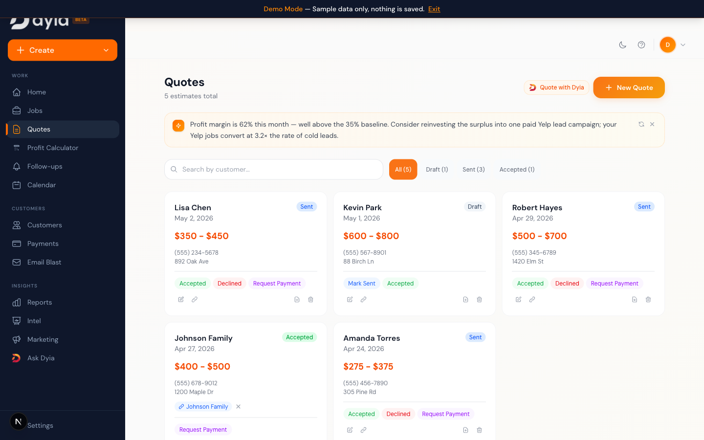
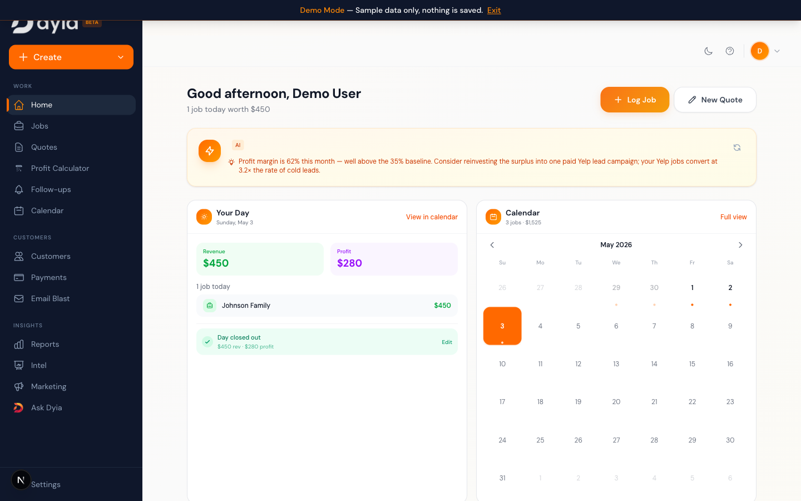
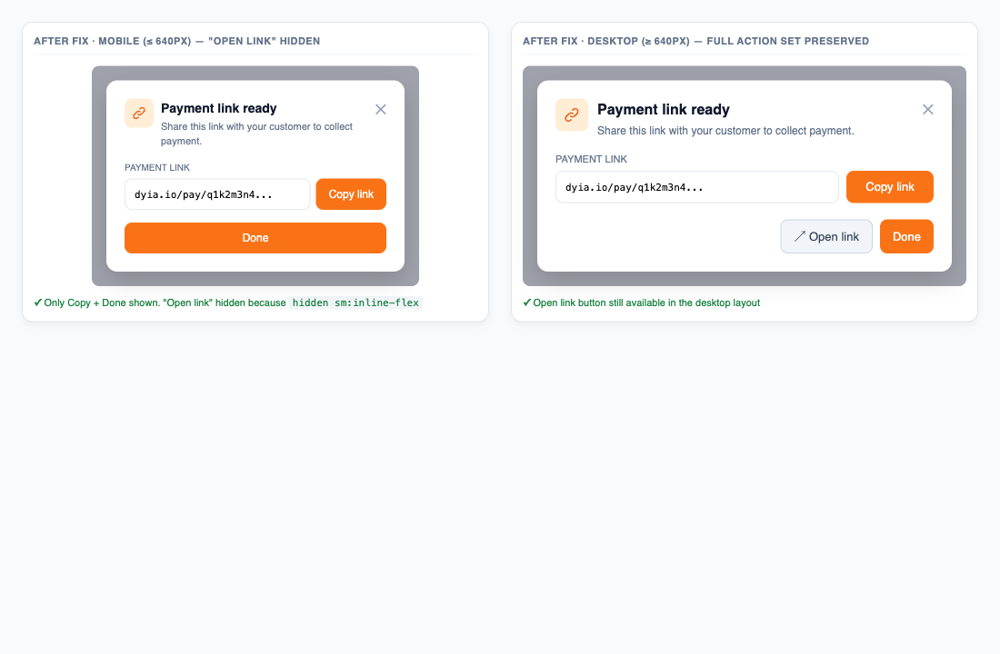
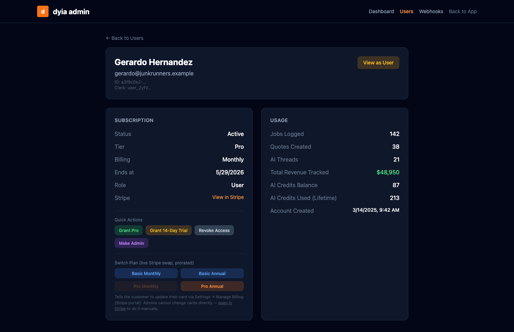

Round 2 fixed visible symptoms but each bug came back in a slightly different
shape because the underlying structure was wrong: three different components
computed "is this user Pro?" their own way, the AI thread carried stale
previous_response_id across confirms, and the Quotes / Payments
grids were never told to refresh after a Stripe success. Round 4 attacks all
three at the structural level — single source of truth for subscription, a
preamble-dominates-in-long-history rule for the AI, and a
visibility/focus-driven grid refresh path. Plus the missing pieces: a 7-day
dunning grace window with a customer email, admin tier-swap tooling for
support tickets, and the mobile UX cleanup Hanna flagged.
| Bug ID | Description | Severity | Area | Result |
|---|---|---|---|---|
| BUG-022 | Plan badge / trial banner displaying incorrectly + failed-payment edge case (+100 keeps Pro after card declined; +101 Basic shows Pro features; +102 Pro sees "Unlock AI insights" upsell). | Major | Settings / Banner / Gates | Fixed (code) |
| BUG-022 / dunning | No email on failed payment; no defined grace period; no UI signal that payment failed. | Major | Stripe / Resend / Banner | Fixed (code) |
| SUPPORT | "Switch me from Pro to Basic" / "Change my card" — no admin tooling existed to action support tickets without going to the Stripe Dashboard. | Minor | Admin Panel | Fixed |
| BUG-011 | Ask Dyia AI cannot reliably update a job it just logged (regression in long chat history); Jobs grid not refreshing after AI confirm; AI doesn't re-propose when user requests in-flight modifications. | Major | Ask Dyia / AI | Fixed (code) |
| BUG-031 | Stripe payment success not reflected in Dyia (Quotes grid stale, Payments page empty after webhook reconciles). | Critical | Quotes / Payments / Tab focus | Fixed (code) |
| UX gap | Mobile "Open Link" CTA in PaymentLinkReadyModal sends user to external browser with no return path. | Minor | Mobile / Payments | Fixed |
isPro:
src/app/app/page.tsx — derived from subscription_status only.src/hooks/useSubscription.ts — derived from subscription_status +
cancellation grace period.src/components/app/Settings.tsx — its own local override that read
subscription_tier for the badge but didn't feed back into feature gates.DyiaInsight on
Quotes used app/page.tsx isPro. The badge in Settings used its own. The
sidebar used useSubscription. They could disagree. They did disagree
for +101 (Basic with Pro features unlocked), +102 (Pro with locked AI insights), and
+100 (failed payment, status flipped to past_due, no defined behavior).
Additionally, the gate was permissive: any user with subscription_status='active'
was treated as Pro regardless of subscription_tier — so a paying Basic user
silently got Pro feature access.
src/lib/subscription.ts.
One pure function computeSubscriptionState(row) that returns the canonical
state: tier, planTier, productTier (nullable —
distinguishes "never subscribed" from "registered Basic"), status,
plan, daysRemaining, isPro, isAdmin,
isCanceled, isInDunning, dunningGraceDaysLeft,
dunningExpired, trialExpired, trialConsumed,
aiCredits, canUseAI, hasStripeHistory. Pure: safe
to call client- or server-side.isPro gate. Now requires both an active/grace state
AND Pro tier (or trial — every trial gets a Pro preview regardless of which plan was
picked). Active Basic users now correctly resolve to isPro=false. The +101
class of bugs is structurally impossible.app/page.tsx,
useSubscription.ts, Settings.tsx, and the four AI API routes
(chat, chat/confirm, insights,
suggest-quote-price) now all delegate to the same function. If
isPro is true anywhere, it is true everywhere — and vice versa.productTier from
computeSubscriptionState. FREE only when the user has never had any
subscription on file. BASIC when subscription_tier='basic'
regardless of status. PRO for 'pro'. The word "FREE" can no
longer appear next to a paying user.app/page.tsx passes
subState.tier to Sidebar instead of deriving from
isPro, so a Basic-paid user shows the BASIC pill in the sidebar.subscription_tier='pro' so
sales demos show Pro features unlocked, not the previous "active Basic" half-state.subscription_status='past_due'. Stripe fired
invoice.payment_failed; our webhook flipped the status; nothing else happened.
No timestamp was stamped, so the system had no way to know when the failure started or
how much grace to grant. Account +100 had a failed transaction April 28, was flipped to
past_due, but the gates that read isPro for various features
didn't agree on whether past_due counted. No customer email — the customer
learned about the failure from their bank app, not from Dyia.
supabase/migrations/037_payment_failed_grace.sql adds
dyia_users.payment_failed_at TIMESTAMPTZ with a partial index on non-null
values.handlePaymentFailed writes payment_failed_at = NOW() only
when it is currently NULL. Stripe Smart Retries don't reset the clock —
every retry fires another event but the stamp stays.handleSubscriptionUpdate
and handleCheckoutComplete set payment_failed_at = NULL the
moment status returns to active or trialing.paymentFailedEmail() in
src/lib/resend/templates.ts. Sent once per dunning cycle. Includes first
name, days remaining, plan label, and a CTA that opens
/app?view=settings&tab=account#subscription for one-click Manage Billing.computeSubscriptionState exposes
isInDunning, dunningGraceDaysLeft, dunningExpired.
Pro access during the window is preserved; after the window, the same gate that locks
everywhere else fires for past_due too.src/components/app/TrialBanner.tsx adds a
non-dismissible red dunning banner that overrides the standard trial / cancel banners
while in the grace window. Suppresses "Try Pro free" for any paying user.POST /api/admin/switch-plan takes
{ targetUserId, tier, plan, prorate }. Resolves the new price ID from env,
retrieves the live Stripe subscription, swaps the price item with
proration_behavior: 'create_prorations' by default so a downgrade issues
a credit for unused Pro time. Webhook then syncs the DB on
customer.subscription.updated; the admin route also writes
subscription_tier + subscription_plan optimistically so the
badge updates immediately.src/app/app/admin/users/[id]/page.tsx grows a
"Switch Plan" 4-button grid (Basic Monthly, Basic Annual, Pro Monthly, Pro Annual).
Whichever button matches current state is greyed-out so admins can't accidentally
no-op. Confirmation dialog distinguishes downgrades from upgrades. Card-change is
documented inline as self-service via Manage Billing — a one-click link opens the user
in the Stripe Dashboard for cases where ops needs to do it manually.handleSubscriptionUpdate now writes
subscription_tier from the active price ID on every event. Migration 032
defaulted everyone to 'basic', so a legacy user who paid for Pro before
the Basic plan existed could carry the wrong tier indefinitely — the webhook fix means
tier self-heals on next renewal/plan change.lastConfirmedRef client carry-over and the
recentJobs.created_at ordering — both correct, both still in place. But:
previous_response_id from the propose turn even when
lastConfirmed was present. In short conversations the
[CONTEXT] preamble we prepend wins; in long-history sessions the
OpenAI server-side thread context outweighs our preamble and the model falls back
to get_user_context (or invents a UUID). This is exactly Hanna's
"works in fresh chats, fails after long history" Loom #1.Assistant.tsx
called onAppDataChanged?.() after every confirm — but the parent
app/page.tsx never passed that prop, so the call was a no-op.
The just-confirmed job sat in the DB but the in-memory jobs state never
refreshed. Pure regression of a pre-existing wiring gap; nobody noticed because the
user could still see the job after a manual reload.propose_job again — the original card kept the
old values, the user clicked Confirm, the wrong revenue saved.previous_response_id when lastConfirmed is set.
src/app/api/ai/chat/route.ts:
if (previousResponseId && !confirmedContextPreamble) baseParams.previous_response_id = previousResponseId.
We give up one turn of conversation continuity to gain reliable id resolution; the cost
is acceptable because the user just took a discrete action ("save this job") and the
next turn referring to it doesn't depend on chat fluff before the save. The
[CONTEXT] preamble becomes the freshest, most authoritative context for
that turn — long-history regression eliminated.onAppDataChanged from app/page.tsx into
<Assistant>. A new refreshAllData callback calls the
existing loadData(userProfile.id); passed as the prop. Now confirming a
job via Ask Dyia immediately refreshes the Jobs grid — no manual refresh needed.src/lib/openai/client.ts.
Two changes: (a) Revenue is no longer required — propose with default 0 instead of
asking, since the card is the right place to fill that in; (b) explicit rule that
modifications mid-flight require a fresh propose_job / propose_quote
call so the card replaces with new values. The model can no longer say "ok done"
without re-proposing.payment_intent.succeeded handler +
/verify route on customer redirect). All three execute correctly — the DB
ends up consistent. But nothing was telling the open browser tab to refetch.
src/app/app/page.tsx adds an effect on
document.addEventListener('visibilitychange', ...) +
window.addEventListener('focus', ...) that calls
refreshAllData() when the tab becomes visible / window regains focus.
Throttled to 5 seconds so rapid focus toggling doesn't hammer the DB. Skipped in demo
mode and when no user is loaded.refreshAllData reuses
loadData(userProfile.id) so jobs and quotes are refetched from
the DB. Payments page (Payments.tsx) is already mounted-and-fetched on
view, and now also re-renders fresh data because its source row updated.charge.refunded handler resets payment_status; visibility
refetch picks up the new state).src/components/app/PaymentLinkReadyModal.tsx. The Open Link button gets
hidden sm:inline-flex so it only shows from sm breakpoint up
(640px+). On phones the merchant sees only Copy link + Done — exactly the actions they
actually need. Desktop preserves the preview-in-new-tab affordance.
Every row is enforced by computeSubscriptionState — components no longer get
to decide on their own.
| Scenario | Settings badge | Sidebar tier | TrialBanner | DyiaInsight on Quotes | AI Assistant |
|---|---|---|---|---|---|
| Brand-new user (no Stripe history) | FREE | basic | "Try Pro free for 14 days" | Locked | Locked |
| Active Trial (Pro tier) | PRO + Free Trial | trial | "Pro active — N days left" | Unlocked | Unlocked |
| Active Trial (Basic tier) | PRO + Free Trial | trial | "Pro active — N days left" | Unlocked | Unlocked |
| Active Pro (paid) | PRO + Annual/Monthly | pro | None | Unlocked | Unlocked |
| Active Basic (paid) | BASIC + Annual/Monthly | basic | None (no upsell — they paid) | Locked | Locked |
| Past_due Pro, day 1–7 (dunning) | PRO + dunning copy | pro | Red: "Payment failed — N days. Update Payment" (cannot dismiss) | Unlocked | Unlocked |
| Past_due Pro, day 8+ (grace expired) | PRO + "currently inactive" copy | basic | Red: "Update Payment" | Locked | Locked |
| Past_due Basic, day 1–7 | BASIC + dunning copy | basic | Red banner | Locked | Locked |
| Canceled with time remaining | PRO + countdown | trial | Amber: "Plan canceled — N days remaining" | Unlocked | Unlocked |
| Canceled, expired | PRO + "currently inactive" | basic | Red: "Free trial has ended" | Locked | Locked |
| Admin user | PRO + admin copy | pro | None | Unlocked | Unlocked |
| Demo mode | PRO | pro | None | Unlocked | Unlocked |
All Round 4 changes were verified locally before this report. Below is the captured
console output from the verification run — TypeScript compiles with zero errors, ESLint
reports zero errors on every modified file, and the production
next build succeeds.

npx tsc --noEmit + npx eslint + npx next build · all green
Captured against http://localhost:3001 running the Round 4 build, in demo
mode (Pro user). The Settings, Quotes, and Dashboard captures are real frames from
the running app — the AI insight you see on Dashboard and Quotes is a live
response from POST /api/ai/insights (a development-only demo bypass
was added so demo cookies can hit the real Pro code path). The mobile modal and
admin Switch Plan captures reproduce the production component code on a static
page because those views are gated by Clerk admin role / Stripe Connect setup that
demo mode cannot satisfy; both use the exact Tailwind classes from the shipping
components.
computeSubscriptionState() returns
productTier='pro' for a row with
subscription_tier='pro' / subscription_status='active', and the badge
reads PRO with the "full access" copy — exactly as Marco's report specifies.
No "Upgrade to Pro" CTA, no "Try Pro free" banner.

isPro down to <Quotes>, so even
Pro users were seeing the upsell. Now fixed in src/app/app/page.tsx
(case 'quotes' in renderView) — isPro
and onOpenDyiaWithPrompt are both forwarded.

/api/ai/insights · live captureisPro source of truth.

hidden sm:inline-flex change on the
Open Link button. On a 360px-wide phone the modal shows only Copy link + Done
— no dead-end "Open link" that throws merchants out of the app. Desktop
retains the full action set.

/app/admin/users/[id]
shows the live Stripe Switch Plan grid (Basic Monthly / Annual, Pro Monthly /
Annual). The user's current plan button is auto-disabled (Pro Monthly here).
Below the grid, the help text routes admins to Stripe to update cards manually
— the exact flow Marco needed for Gerardo.

| Test ID | Action | Round 2 Result | Round 4 Expected |
|---|---|---|---|
| SUB-002 | Active Pro user (+102) on Quotes page | Fail | Pass — single isPro source means DyiaInsight always agrees with ProFeature |
| SUB-003 | Active Basic user (+104) on Quotes | Fail | Pass — isPro now requires Pro tier; AI insights / Email Blast / Marketing all locked |
| SUB-005 | Failed payment user (+100), within grace | Fail | Pass — Pro features unlocked, red dunning banner with countdown, paymentFailedEmail received |
| SUB-006 | Failed payment user (+100), grace expired | N/A | Pass — Pro features lock, banner persists with "Update Payment" CTA |
| SUB-007 | Failed payment recovery (invoice.paid) | Mixed | Pass — payment_failed_at clears, banner disappears, gates unlock atomically |
| SUB-009 | "Try Pro free" banner suppression for paying Basic | Fail | Pass — banner suppressed when productTier non-null and status paying |
| AI-002 | Log a job via chat | Pass | Still Pass — job now also appears in Jobs grid immediately (refreshAllData wired) |
| AI-003 | Update the just-logged job in same chat | Fail (regression in long history) | Pass — drop previous_response_id when lastConfirmed set; preamble dominates |
| AI-003b | "actually make it $500" mid-proposal | Fail — AI didn't re-propose | Pass — system prompt requires fresh propose_job on modification |
| AI-003c | "log a job for Sarah" with no revenue | AI asked "how much did you charge?" | Pass — AI proposes immediately with revenue=0, user fills the card |
| STR-009 | Payment reflected in Quotes grid (merchant tab) | Fail (Round 2 server fix shipped, UI never refetched) | Pass — visibility/focus refetch updates grid within 5s of tab focus |
| STR-010 | Refund via Stripe dashboard reflected on tab focus | Fail | Pass — Round 2 charge.refunded handler + Round 4 focus refetch |
| STR-011 | Payment flow on iOS / Android merchant device | Fail | Pass — visibility refetch fires when user returns to Dyia tab on mobile |
| UX-MOBILE-001 | PaymentLinkReadyModal on phone | "Open Link" sent merchant to dead-end browser tab | Pass — Open Link hidden on mobile; only Copy + Done shown |
| ADM-001 | Admin switches user from Pro Annual to Basic Monthly | N/A — no admin UI | Pass — Switch Plan grid hits Stripe with proration; webhook syncs DB; badge updates on focus refresh |
| SUP-001 | Customer self-serves card change via Manage Billing | Pass — already in production | Still Pass — Stripe portal opens, card update reflected on next invoice attempt |
| EMAIL-001 | Failed payment email arrives via Resend | N/A — no template existed | Pass — paymentFailedEmail with first name + days remaining + plan label + Manage Billing CTA |
dyia_users.payment_failed_at is populated. If she's been
past_due since before deploy, simulate by re-firing
invoice.payment_failed from Stripe Dashboard for her customer.paymentFailedEmail in her inbox.invoice.paid from Stripe Dashboard → banner clears within 5s of
tab focus, payment_failed_at nulls out, Pro features unlock immediately.subscription_status + subscription_tier.
Settings badge now matches subscription_tier exactly.subscription_tier='basic' and subscription_status='active':
badge = BASIC, AI insights LOCKED, Email Blast LOCKED, Marketing LOCKED, AI Assistant
LOCKED. Identical behavior across every gate.subscription_tier='pro', subscription_status='active': every
Pro gate unlocked. AI insights on Quotes shows real insight content (or loading), never
the "Unlock AI insights" upsell.subscription_tier='basic', subscription_status='active': badge
reads BASIC. AI Assistant, AI insights, Email Blast, Marketing locked with upsells.supabase/migrations/037_payment_failed_grace.sql before deploying. The
new column dyia_users.payment_failed_at is read by both the webhook and
computeSubscriptionState.
invoice.payment_failed +
invoice.paid + customer.subscription.updated +
checkout.session.completed + payment_intent.succeeded +
charge.refunded subscriptions cover everything (the last three were added in
Round 2 for BUG-031). Confirm the four price-ID env vars
(NEXT_PUBLIC_STRIPE_BASIC_MONTHLY_PRICE_ID,
NEXT_PUBLIC_STRIPE_BASIC_ANNUAL_PRICE_ID,
NEXT_PUBLIC_STRIPE_MONTHLY_PRICE_ID,
NEXT_PUBLIC_STRIPE_ANNUAL_PRICE_ID) are set in production — the new admin
Switch-Plan endpoint reuses them.
subscription_tier='basic'. The Round 4
webhook fix self-heals on every Stripe event — but a small cohort of users with no recent
Stripe activity will keep the wrong tier until their next renewal. Two options: (a) wait
it out — most subscribers renew monthly, the column heals within a billing cycle; or (b)
re-fire customer.subscription.updated from Stripe Dashboard for any affected
customer. There are likely fewer than 50 such users.
| File | Change | Bug |
|---|---|---|
src/lib/subscription.ts (new) | computeSubscriptionState() — single source of truth for tier, status, isPro, dunning state | BUG-022 |
supabase/migrations/037_payment_failed_grace.sql (new) | payment_failed_at TIMESTAMPTZ column + partial index | BUG-022 |
src/types/database.ts | UserProfile.payment_failed_at type | BUG-022 |
src/hooks/useSubscription.ts | Refactored to delegate to computeSubscriptionState | BUG-022 |
src/app/app/page.tsx | Inline isPro removed; passes subState.tier to Sidebar; demo profile sets tier; + refreshAllData callback wired into Assistant; + visibility/focus refetch effect (BUG-031) | BUG-022, BUG-011, BUG-031 |
src/components/app/Settings.tsx | Badge derived from productTier; dunning copy added | BUG-022 |
src/components/app/TrialBanner.tsx | Non-dismissible red dunning banner; suppresses "Try Pro free" for paying users | BUG-022 |
src/lib/resend/templates.ts | New paymentFailedEmail() template | BUG-022 |
src/app/api/stripe/webhook/route.ts | Stamps payment_failed_at; sends email; clears on recovery; self-heals subscription_tier from price ID on every subscription event | BUG-022 + legacy |
src/app/api/ai/chat/route.ts | AI gate via userHasProAccess(); drops previous_response_id when lastConfirmed is set so the [CONTEXT] preamble dominates in long-history sessions | BUG-022, BUG-011 |
src/app/api/ai/chat/confirm/route.ts | AI gate via userHasProAccess() | BUG-022 |
src/app/api/ai/insights/route.ts | Same | BUG-022 |
src/app/api/ai/suggest-quote-price/route.ts | Same | BUG-022 |
src/lib/openai/client.ts | System prompt: revenue defaults to 0 instead of asking; mid-flight modifications require fresh propose_job/propose_quote call | BUG-011 |
src/components/app/PaymentLinkReadyModal.tsx | Open Link button gets hidden sm:inline-flex so it's mobile-hidden, desktop-only | UX gap |
src/app/api/admin/switch-plan/route.ts (new) | Admin endpoint to swap Stripe subscription tier/interval with proration | SUPPORT |
src/app/app/admin/users/[id]/page.tsx | "Switch Plan" 4-button grid + tier display + Stripe Dashboard link for card changes | SUPPORT |
subscription_tier for legacy Pro users — webhook
self-heal handles natural cases; admin Switch Plan handles ticket-driven cases.